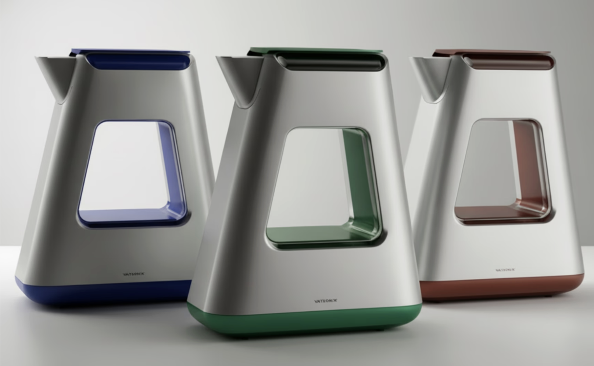
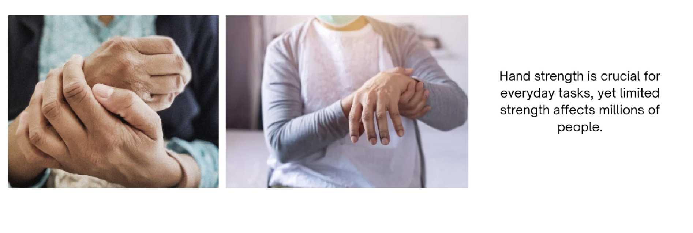
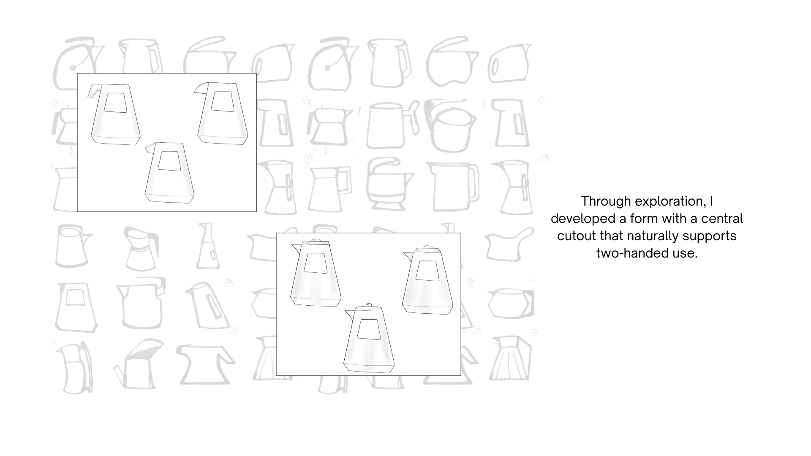
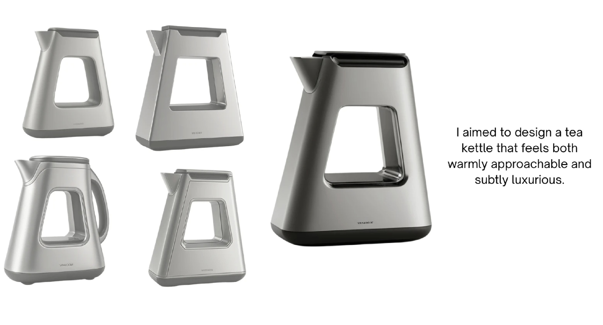
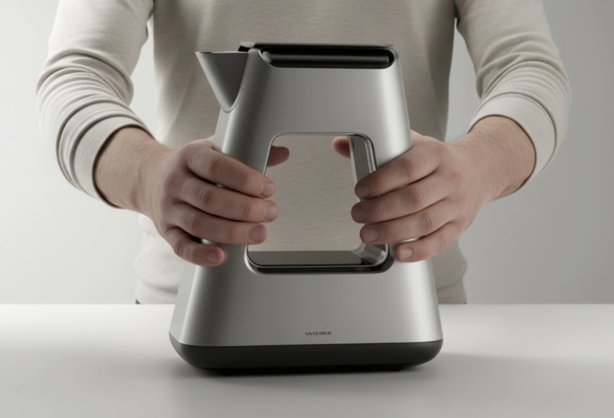

.✦ ݁˖ Lumbre Rededigned Tea Kettle

Designed for users with limited hand strength, prioritizing safe and effortless mobility.
Duration: 2 Months

How might I redesign a typically one-handed activity to encourage two-handed use, evenly distributing weight and reducing strain?
Exploration





SafeBuddy works as a comforting nightlight during normal use and, in emergencies, displays LED arrows and plays parent-recorded messages to guide children safely. It wirelessly charges and connects to an app so parents can control settings, record messages, and monitor its location.
StoryBoard